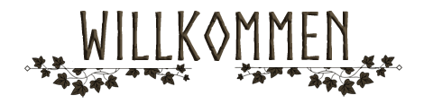
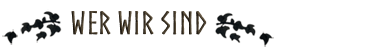
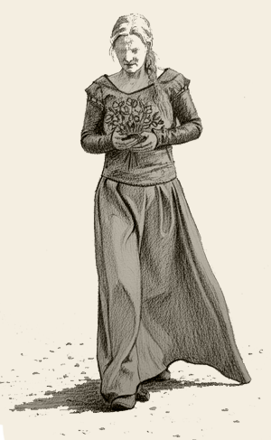
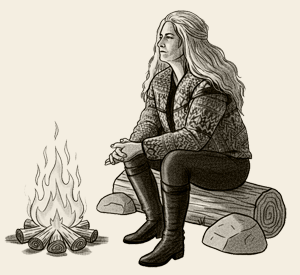

Schön, dass du den Weg zu uns gefunden hast!
Wir sind eine junge
Live-Rollenspiel-Gruppe, die mit viel Leidenschaft und Freude in
fantastische Welten eintaucht. Noch stehen wir am Anfang –
aktuell besteht unsere Gemeinschaft aus drei Spielern – doch
unser Ziel ist es, eine lebendige Gilde aufzubauen, in der viele
Abenteurer, Träumer und Kämpfer zusammenfinden.

Wir sind keine alteingesessene Großgruppe, sondern eine Gemeinschaft im Aufbau. Das macht uns besonders: Bei uns kannst du von Anfang an mitgestalten, Ideen einbringen und deine Rolle in einer wachsenden Gilde finden. Wir suchen Menschen, die wie wir Lust haben, gemeinsam Abenteuer zu erleben, Freundschaften zu knüpfen und etwas Neues entstehen zu lassen.
Unser Ziel
Unser erster großer Schritt führt uns zum Drachenfest, wo wir als Gilde auftreten wollen. Doch damit soll es nicht enden: Auch andere Cons – ob groß oder klein – stehen für uns offen. Wir möchten langfristig eine Gruppe schaffen, die nicht nur auf einem einzelnen Event präsent ist, sondern als Gemeinschaft weiterwächst.
Was dich bei uns erwartet
-
Gemeinschaft & Zusammenhalt – Wir stehen füreinander ein, im Spiel wie auch außerhalb.
-
Raum für Kreativität – Dein Charakter soll bei uns Platz haben, egal ob Held, Heiler, Gelehrter oder Draufgänger.
-
Unterstützung für Einsteiger – Auch wenn du noch nie auf einem Con warst: Wir helfen dir gern mit Tipps zu Charakterkonzept, Ausrüstung und allem, was du wissen musst.
-
Freude am Spiel – Uns geht es nicht um Perfektion, sondern darum, gemeinsam Spaß zu haben und Geschichten zu erschaffen.
Unsere Werte
Respekt, Fairness und ein freundliches Miteinander sind für uns selbstverständlich. Wir legen Wert darauf, dass jeder sich willkommen fühlt – unabhängig von Erfahrung, Herkunft oder Charakterkonzept.
Werde Teil unserer Gilde
Wenn du noch keine Gruppe hast, aber den Wunsch nach Anschluss verspürst, bist du bei uns genau richtig. Ob du allein kommst oder mit Freunden – wir freuen uns über jeden, der mit uns die Gilde wachsen lässt.
Hast du Lust, dabei zu sein?
Dann melde
dich bei uns und werde Teil einer Gemeinschaft, die gerade erst
beginnt, aber schon voller Abenteuer steckt.
Auf ins Spiel – wir sehen uns beim Drachenfest!